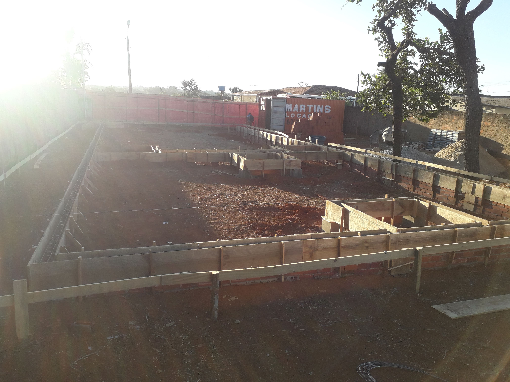
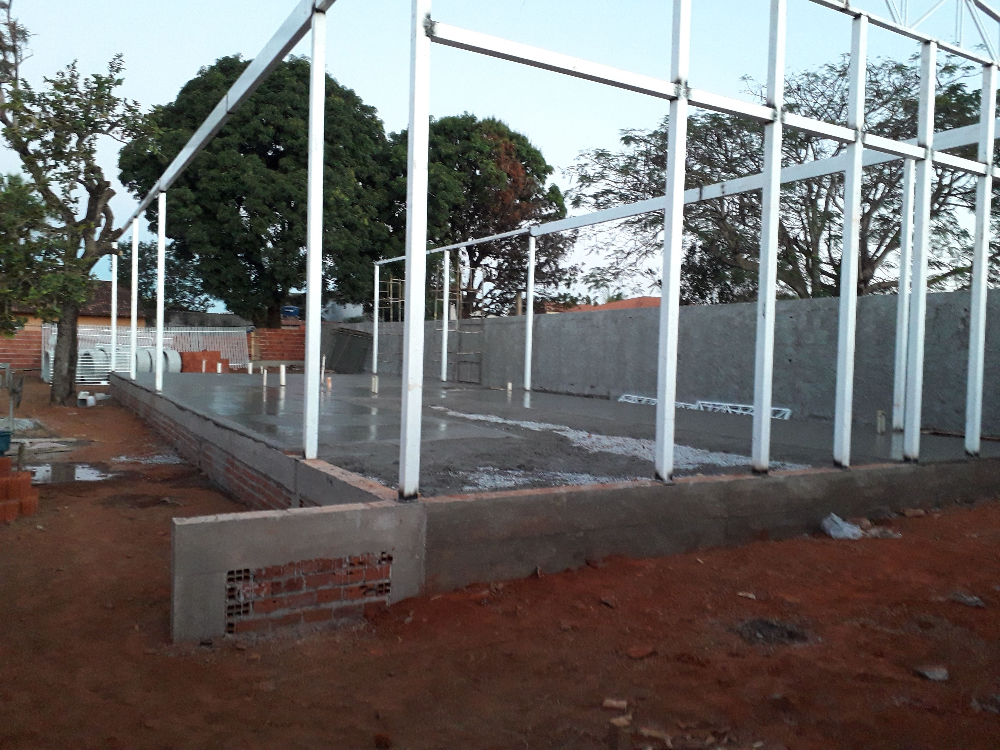
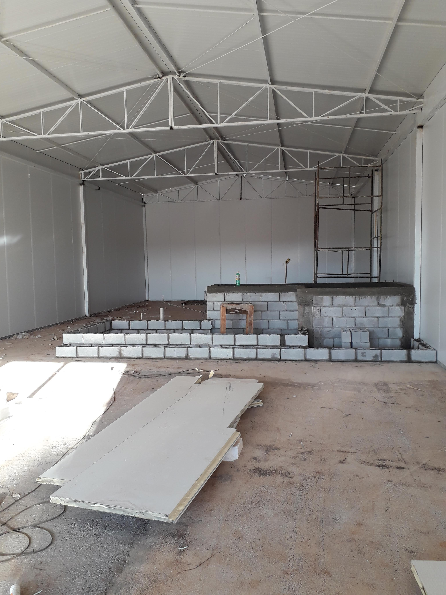
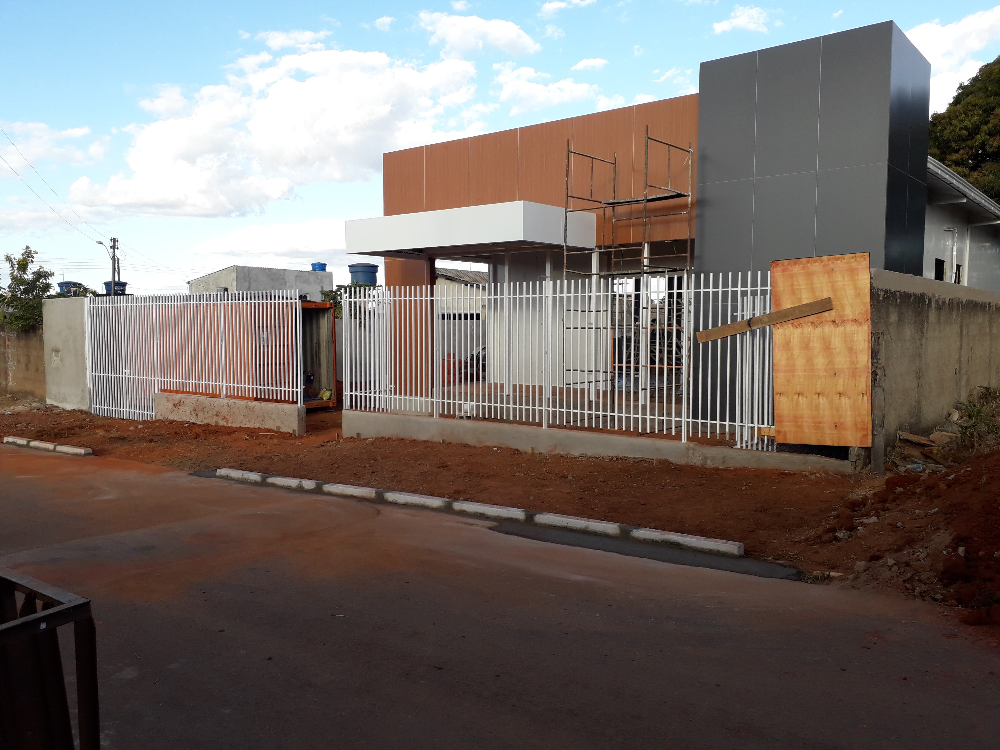
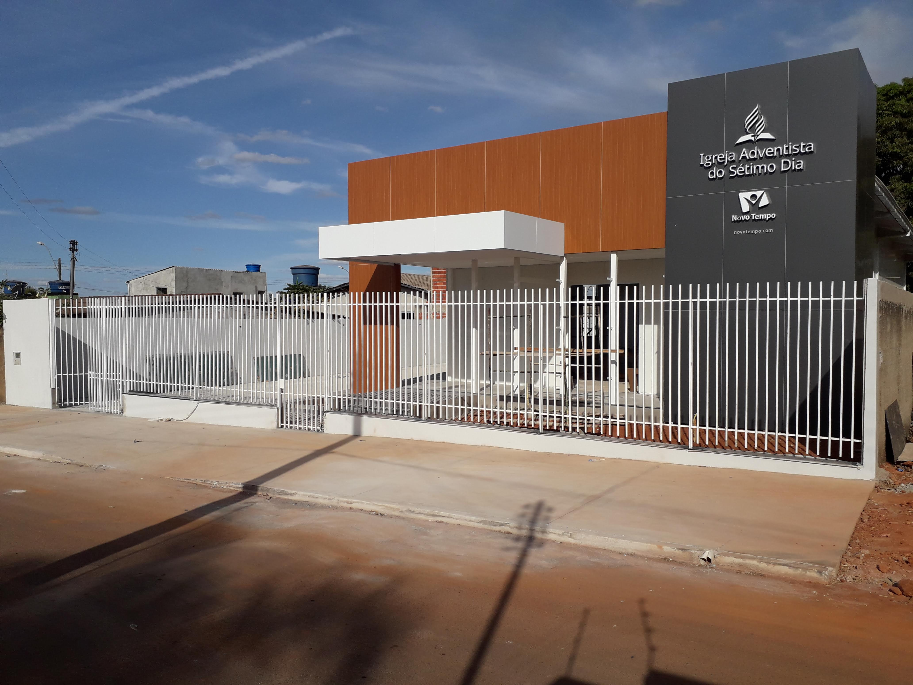

A FF Construtora é uma empresa especializada em construção civil, reformas e execução de obras residenciais, comerciais e industriais, fundada em 2016 com o propósito de oferecer soluções completas, seguras e de alta qualidade para cada projeto.
Desde o início de sua trajetória, a FF Construtora atua com compromisso, responsabilidade e transparência, buscando compreender as necessidades de cada cliente para entregar resultados que unem qualidade, eficiência e excelente custo-benefício. Nossa equipe é formada por profissionais qualificados e parceiros experientes, garantindo a execução de cada etapa com planejamento, organização e atenção aos detalhes.
Valorizamos o cumprimento de prazos, a utilização de materiais de qualidade e a adoção das melhores práticas da construção civil. Nosso objetivo é transformar projetos em realidade, proporcionando obras duráveis, funcionais e alinhadas às expectativas de nossos clientes.
Na FF Construtora, cada obra representa um compromisso com a excelência, a confiança e a satisfação de quem escolhe construir conosco.
Confira alguns dos projetos executados pela FF Construtora, demonstrando nosso compromisso com a qualidade, acabamento e satisfação dos nossos clientes.





A FF Construtora executou a construção completa de um templo religioso localizado em Vargem Bonita – Distrito Federal, para a União Centro-Oeste Brasileira da Igreja Adventista do Sétimo Dia. A obra contemplou desde a preparação do terreno, fundações e estrutura em concreto armado até os acabamentos finais, incluindo instalações elétricas e hidráulicas, revestimentos, pintura e pavimentação em piso intertravado (Paver). Destaca-se a utilização de cobertura termoacústica Isoeste, proporcionando maior conforto térmico, isolamento acústico e durabilidade. O empreendimento foi entregue dentro dos padrões técnicos e de qualidade, pronto para utilização pelo contratante.